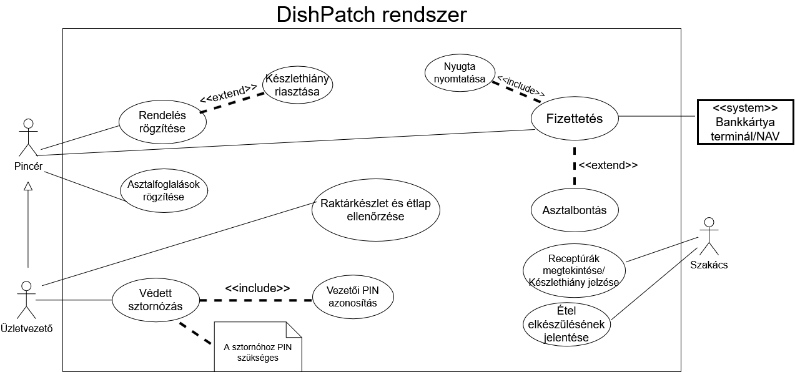

- Bevezetés
A Szoftver Követelmény Specifikáció (Software Requirements Specification, SRS) dokumentum célja,
hogy átfogóan, részletesen és minden érintett számára egyértelműen összefoglalja a DishPatch éttermi rendszer
(kassza és konyhai kijelző modul) funkcionális és nem funkcionális követelményeit. Ezt a dokumentumot a
szoftverfejlesztési folyamatunk kezdeti, úgynevezett előkészítő
fázisában alapoztuk meg, majd a rákövetkező kidolgozási fázisban bővítettük ki a tervezéshez szükséges
mélységű technikai és logikai részletekkel. Célunk, hogy a fejlesztés teljes életciklusa alatt egyfajta "szerződésként"
és sorvezetőként szolgáljon a megrendelő és a fejlesztőcsapat között.
A dokumentum elsődleges olvasóközönsége a megrendelői oldal (étteremvezetők, tulajdonosok), akik ezáltal
feketén-fehéren meggyőződhetnek róla, hogy a fejlesztőcsapat pontosan érti az üzleti igényeiket, és valóban
a mindennapi problémáikat megoldó szoftver fog elkészülni. Másrészt a dokumentum a fejlesztőgárda minden
szereplőjének (programozók, adatbázis-tervezők, tesztelők) is szól, hiszen az itt leírtak alapján azonosítjuk
a rendszerben szereplő objektumokat, az adatbázis tábláit, valamint a rendszer statikus és dinamikus modelljeit.
Mivel az éttermi szoftverek világa sajátos szakzsargont használ, a dokumentáció írásával párhuzamosan a projekt
Szótárát is folyamatosan bővítjük, hogy az olyan fogalmak, mint a "KDS" vagy a "Sztornó", mindenki
számára ugyanazt jelentsék.
- Áttekintés
A DishPatch egy modern, érintőképernyős eszközökre (POS terminálokra és tabletekre), valamint hagyományos
számítógépekre egyaránt optimalizált integrált éttermi szoftver. A fejlesztés elsődleges mozgatórugója az volt,
hogy megoldást kínáljunk a vendéglátás leggyakoribb fájó pontjaira: a papíralapú kommunikáció lassúságára,
a konyhára beküldött, majd elveszett rendelési fecnikre, a pincérek és szakácsok közötti folyamatos félreértésekre,
valamint az átláthatatlan raktárkészletből adódó anyagi veszteségekre.
- A termék környezete: A rendszert kifejezetten pörgős, nagy forgalmú, zajos vendéglátóipari környezetbe
(éttermek, bisztrók) szánjuk. Egy péntek esti csúcsidőszakban a másodpercek is számítanak, így a gyorsaság és
a megbízhatóság nem köthet kompromisszumot. A szoftver az étterem saját, belső helyi hálózatán (LAN)
működik egy központi gépen futó szerverrel. Ez garantálja, hogy egy esetleges internetkimaradás ami egy nyári
vihar közben gyakran előfordul – nem bénítja meg a kiszolgálást, a gépek továbbra is azonnal kommunikálnak
egymással.
- Legfontosabb funkciók: A rendszer magában foglal egy dinamikus, grafikus asztaltérképet a vendégtér
teljes átlátásához; egy érintőképernyőre optimalizált rendelésfelvételi modult; egyszerű asztalbontási
(Split Bill) lehetőséget a fizettetés felgyorsítására; valamint egy konyhai kijelző modult (KDS) a
papír alapú blokkok teljes kiváltására. Kiemelt funkció még a receptúrákon alapuló automatikus készletkezelés,
amely azonnal vonja a raktárból a felhasznált alapanyagokat.
- A felhasználók jellemzői: A rendszert három fő célcsoport használja. 1. A Pincérek,
akik folyamatos mozgásban vannak, és gyors, egyértelmű, kevés kattintást igénylő felületet várnak el.
2. A Szakácsok, akik a konyhai zajban, melegben és párában dolgoznak, és a távolról is jól olvasható monitort
figyelik; számukra a letisztult színkódolás és az olvashatóság a legfontosabb. 3. Az Üzletvezetők,
akik csendesebb környezetben az adminisztrációs feladatokat (árak módosítása, új termékek és dolgozók felvitele,
forgalmi statisztikák elemzése) végzik, teljes rendszerjogosultsággal.
- Korlátozások, feltételezések: Fontos elvárás a hardverfüggetlenség. A rendszernek egy régebbi,
gyengébb teljesítményű Windows-os éttermi gépen, vagy egy korszerű érintőképernyős eszközön is akadásmentesen
kell futnia. Ezt a modern, több operációs rendszert is natívan támogató (cross-platform) Tauri keretrendszer
alkalmazásával biztosítjuk.
- A rendszer funkciói
Ebben a fejezetben részletezzük a rendszerrel szemben támasztott legfontosabb funkcionális elvárásokat. A
könnyebb megértés és a pontosabb szoftvertervezés érdekében a működést nemcsak szövegesen, hanem úgynevezett
Use Case (használati eset) modellek segítségével is bemutatjuk, rögzítve a szereplőket és a pontos folyamatlépéseket.
A rendszer globális Use Case diagramja

A diagramon szereplő aktorok (szereplők) pontos definíciója:
- Pincér: Az az éttermi dolgozó, aki a vendégekkel közvetlenül tartja a kapcsolatot. Felveszi és módosítja
a rendeléseket, kezeli a zónákat és asztalokat, intézi a fizettetést, valamint tájékoztatja a vendéget az ételek
elérhetőségéről. Nem rendelkezik jogosultsággal termékek törlésére (sztornózására) a konyhára küldés után.
- Szakács: A konyhán dolgozó személyzet tagja, aki nem találkozik a vendégekkel. Az ő feladata a KDS
(Kitchen Display System) felületén megjelenő digitális blokkok feldolgozása, az ételek elkészítése, majd
egyetlen érintéssel azok "készre jelentése", ami értesíti a pincért.
- Üzletvezető: Az étterem vezetője vagy tulajdonosa, aki a legmagasabb (Admin) szintű hozzáféréssel
rendelkezik a szoftverhez. Ő tartja karban a terméktörzset és a receptúrákat, kezeli az alkalmazottak
profiljait és jogosultságait. Kizárólag ő képes (egyedi PIN kóddal) sztornózni egy már felvett és konyhára
küldött tételt, megelőzve ezzel a visszaéléseket.
A diagramon szereplő főbb use case-ek (használati esetek) felsorolása: Rendelés rögzítése, Fizettetés
(és komplex asztalbontás), Védett sztornózás, Étel készre jelentése a konyhán, Raktárkészlet ellenőrzése és
bevételezés. Az alábbiakban a legkritikusabb napi folyamatot fejtjük ki részletesen.
3.1. Első követelmény: Rendelés felvétele és asztalhoz rögzítése
- A use case neve: Rendelés felvétele és asztalhoz rögzítése.
- Rövid leírás: A Pincér a grafikus asztaltérképen kiválasztja a vendégek asztalát, felveszi a kért
ételeket és italokat, megadja az esetleges egyedi kéréseket (pl. "jól átsütve"), majd véglegesíti a rendelést.
Ekkor a tételek azonnal megjelennek a konyhában elhelyezett kijelzőn, a rendszer pedig a háttérben frissíti
a várható raktárkészletet.
- Prekondíciók (előfeltételek): A Pincér sikeresen azonosította magát a rendszerben a saját egyedi
PIN kódjával. A hálózati kapcsolat él a terminál és a szerver között. Létezik legalább egy szabad, vagy
általa korábban már megnyitott asztal. A terméktörzs, az árak és az aktuális készletadatok sikeresen
betöltődtek a memóriába.
- Post kondíciók (utófeltételek): A rendelés sikeres mentése után az asztal állapota
"Foglalt/Fogyasztás alatt" státuszba vált. A rendelés tételei és a hozzájuk tartozó megjegyzések valós
időben megjelennek a Szakács KDS képernyőjén, időbélyeggel ellátva. A rendszer a beépített receptúrák
alapján automatikusan zárolja (virtuálisan levonja) a szükséges alapanyagokat az adatbázisban lévő
raktárkészletből.
- Szokásos működés (Main Flow):
- A Pincér a főképernyőn kiválasztja a megfelelő zónát (pl. Belső terem), majd rábök arra az asztalra,
ahol a vendégek ülnek.
- A rendszer megnyitja a rendelésfelvételi panelt az aktuális asztalhoz rendelve.
- A Pincér a bal oldalon lévő kategóriák (pl. Levesek, Főételek, Italok) között böngészve rákattint a
kért termékekre. Szükség esetén a "+" és "-" gombokkal módosítja a mennyiséget.
- A Pincér egy adott termékre kattintva hozzáad egy elkészítési megjegyzést (pl. "Öntet nélkül").
- Miután minden tételt rögzített, megnyomja a nagyméretű, zöld "Rendelés leadása" gombot.
- A rendszer elmenti az adatokat a PostgreSQL adatbázisba, majd azonnal frissíti a konyhai kijelző
felületét, vizuális vagy hangjelzést adva a szakácsoknak az új feladatról.
- Alternatív esetek (Alternate Flows): A Pincér a rendelés felvétele közben véletlenül rossz termékre
kattint, vagy a vendég az utolsó pillanatban meggondolja magát. Mivel a Pincér még nem nyomta meg a
véglegesítő "Rendelés leadása" gombot, egyszerűen a tétel melletti piros 'Kuka' ikonra kattintva törli
azt az aktuális kosárból. A kosár frissül, az összeg újraszámolódik, a konyha pedig mindebből semmit nem
érzékel, hiszen az adat nem hagyta el a terminált.
- Kivételes esetek (Exception Flows):
- Készlethiány: A Pincér olyan ételt akar felvenni (pl. Bélszín steak), amelynek fő alapanyaga
a raktár adatai alapján teljesen elfogyott. A rendszer azonnal felugró hibaüzenetet dob ("Figyelem:
Készlethiány!"), megakadályozza a tétel kosárba tételét, és javasolja, hogy a Pincér
tájékoztassa a vendéget, illetve hívja az Üzletvezetőt (aki felülbírálhatja a hiányt,
ha csak adminisztrációs hiba történt).
- Hálózati szakadás: A "Rendelés leadása" gomb megnyomásakor a terminál nem éri el a
belső szervert. A rendszer piros sávban jelzi a hálózati hibát, a kosár tartalmát helyben,
ideiglenesen elmenti a memóriába, és amint a hálózat helyreáll, automatikusan újrapróbálja a küldést.
- Használhatóság
Ebben a fejezetben azokat a nem funkcionális követelményeket részletezzük, amelyek a szoftver kényelmes, logikus és
hatékony mindennapi használatát garantálják. A vendéglátásban a felhasználói élmény (UX) és a felhasználói felület
(UI) minősége nem csupán esztétikai kérdés: egy rosszul elhelyezett gomb vagy egy átláthatatlan menü komoly
fennakadásokat, tévesztéseket és végső soron elégedetlen vendégeket, anyagi kárt eredményez.
- Betanulási idő (Ergonómia): A vendéglátóiparban köztudottan magas a munkaerő fluktuációja, így a betanítási
költségeket és időt drasztikusan minimalizálni kell. A szoftver felületét úgy kell megterveznünk, hogy a hétköznapi
okostelefonok logikájára épüljön. A cél az, hogy egy teljesen új, informatikai képzettség nélküli Pincér vagy
Szakács a rendszer alapvető használatát (asztal nyitása, étel felvétele, fizettetés, illetve a konyhai blokkok
leütése) külső segítség nélkül, legfeljebb 30 perc alatt önállóan el tudja sajátítani.
- Feladatvégzés sebessége (Hatékonyság): A hagyományos, memóriára és papírfecnikre hagyatkozó rendelésfelvétel,
majd a konyhába sétálás hosszú perceket emészt fel. Az új szoftverrel a képernyőváltások számát minimalizáljuk.
Az ergonómiai elvárás, hogy egy átlagos asztaltársaság (4 fő) mintegy 6-8 tételből álló rendelésének rögzítése
és konyhára küldése egy gyakorlott pincér esetében az asztal megnyitásától számítva ne vegyen igénybe
15-20 másodpercnél többet.
- Kezdő felhasználók vizuális támogatása: A UI/UX tervezés során a "kevesebb néha több" elvét alkalmazzuk, és
figyelembe vesszük a fizikai környezetet. A képernyőn csak az adott művelethez feltétlenül szükséges információk
jelennek meg. A termékkategóriákat és az asztalok állapotát (pl. szabad, foglalt, fizetésre vár) egyértelmű, azonnal
felismerhető színkódokkal (zöld, piros, sárga) különböztetjük meg. A gombok (hitboxok) méretét direkt túlméretezzük,
hogy az érintőképernyőkön, sietség közben vagy akár nedves kézzel is minimálisra csökkentsük a melléütés
esélyét.
- Hasonlóság a már piacon lévő rendszerekhez: A rendelésfelvételi felület megtervezésekor szándékosan követjük
a bevált iparági standardokat és az olvasás irányát (bal oldalon a főkategóriák, középen a termékek bontása,
jobb oldalon pedig a virtuális blokk/kosár aktuális állapota). Mivel a legtöbb professzionális éttermi rendszer
(pl. Micros, r_keeper) ezt a bevált struktúrát használja, a más munkahelyről érkező, tapasztalt pincérek
számára a mi rendszerünk használata is az első pillanattól kezdve ismerős, logikus és kézreálló lesz.
- Megbízhatóság
- Teljesítmény
- Támogatottság
- Tervezési korlátozások
- On-line dokumentáció és Help rendszer
- Felhasznált kész komponensek
- Interfészek
- 11.1. Felhasználói interfészek
- 11.2. Hardware interfészek
- 11.3. Software interfészek
- 11.4. Kommunikációs interfészek
- Alkalmazott szabványok
- 12.1. Kötelezően alkalmazandó szabványok
- 12.2. Választás alapján alkalmazott szabványok
- Mellékletek